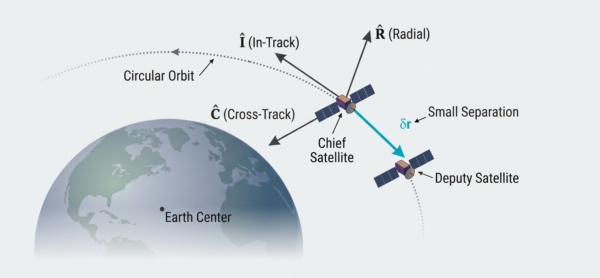
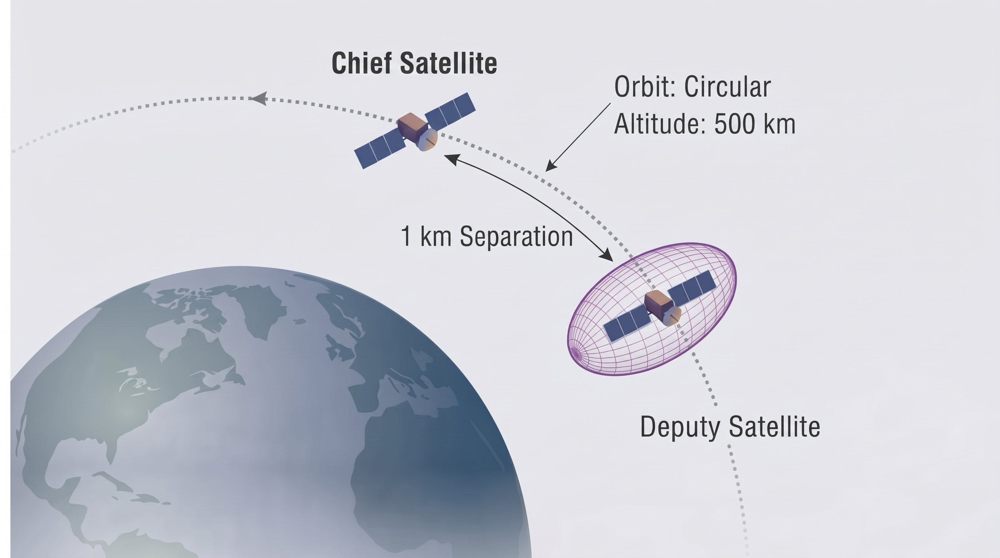
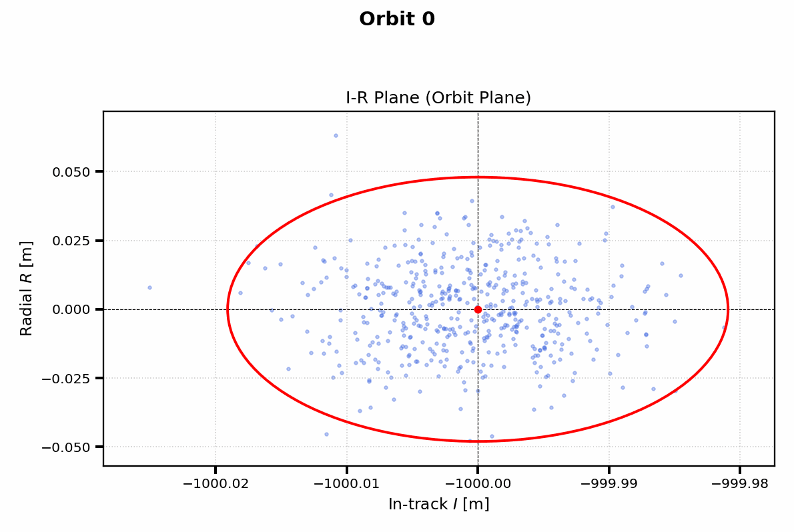
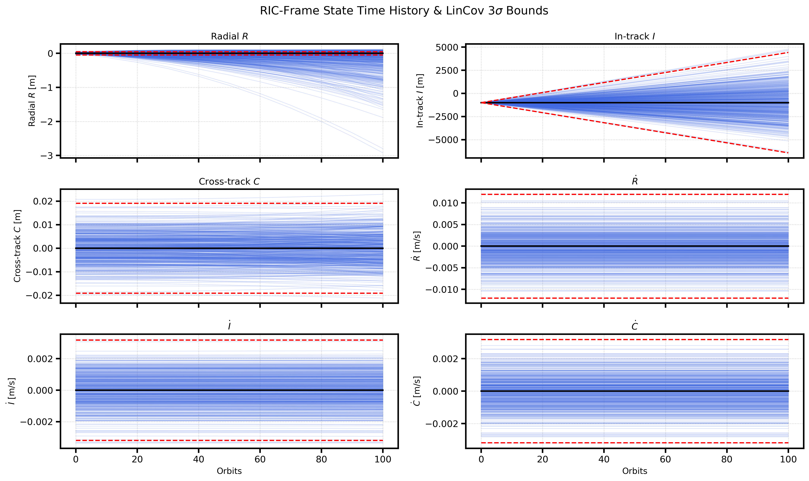
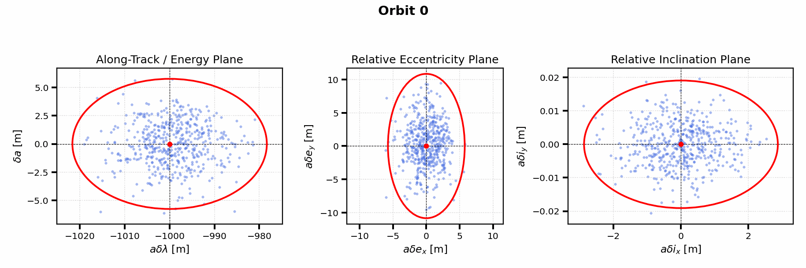
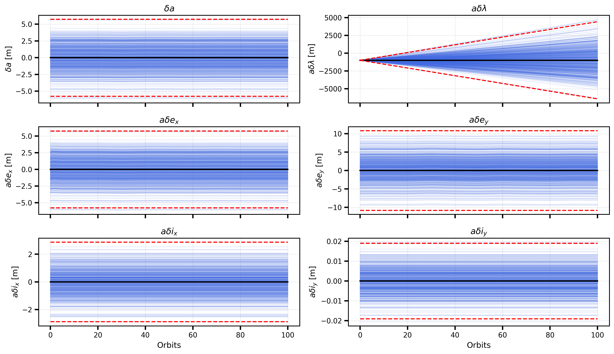

Why Linear Covariance Propagation Fails in Cartesian RIC
…and how Relative Orbital Elements fix it
Linear covariance propagation is a method for analyzing the evolution of uncertainty in a state vector over time. In this post, we will explore the importance of choosing the correct state representation for linear covariance propagation in environments involving relative spacecraft dynamics. Specifically, we will study two state representations: the first using Cartesian coordinates represented in the Radial, In-Track, Cross-Track (RIC) frame propagated with the Clohessy-Wiltshire (CW) linearized equations of motion, and the second taking an orbital parameterization approach using Relative Orbital Elements (ROEs).
We will compare these methods through a Monte Carlo simulation using a nonlinear two-body dynamics propagator. It is important to perform these kinds of studies to ensure spacecraft safety during close-proximity missions, as well as to assess long-term uncertainty growth.
Linear Covariance Propagation
Let’s look into how linear covariance propagation works and the benefits of using it. In state estimation, two important quantities are the mean, \(\mathbf{x}\), and the covariance, \(\mathbf{P}\). The covariance represents the uncertainty in the state estimate. Imagine a bell curve, representing a 1-dimensional distribution; the covariance reduces to variance and represents how “wide” the bell curve is, where a larger covariance correlates to a “wider” bell curve.
With this in mind, let’s look at a scenario involving two satellites in formation flight. Let’s call the satellite being followed the “Chief” and the following satellite the “Deputy”. In this scenario we will assume the state of the Chief satellite is perfectly known, while the Deputy has some covariance associated with its state estimate as seen in Figure 1.

As the two satellites progress in their orbits, the covariance can also be propagated forward to show the uncertainty in the Deputy’s state over time using linear covariance propagation. Equation 1 is the equation used for performing this propagation.
\[ \mathbf{P}(t) = \mathbf{\Phi}(t,t_0) \mathbf{P}_0 \mathbf{\Phi}(t,t_0)^T + \mathbf{Q} \tag{1}\]
In this equation \(\mathbf{\Phi}\) represents the state transition matrix, which uses linearized dynamics to propagate state deviations from \(t_0\) to \(t\). \(\mathbf{P}_0\) is the covariance at \(t_0\), and \(\mathbf{Q}\) represents process noise to account for unmodeled perturbations, though in our scenario this will be zero because we will be modeling the system using two-body equations of motion with the only perturbation being gravity. Equation 1 will do a good job at propagating the covariance forward in time given that the uncertainty remains Gaussian and that the linearized dynamics contained in \(\mathbf{\Phi}\) accurately represent the true system dynamics. Linear covariance propagation saves time by eliminating the need for large Monte Carlo simulations to analyze the uncertainty bounds.
Coordinate Geometry
While Equation 1 stays the same, the STM \(\mathbf{\Phi}\) changes depending on the state representation we choose — as well as its ability to accurately capture the nonlinear dynamics present in orbit. As mentioned above, we will take two different state representations: a RIC framework using CW equations and an orbital parameterization using ROEs.
Clohessy Wiltshire STM
To understand how \(\mathbf{\Phi}\) is formed using the CW equations, we must first visit the RIC frame. This is because the CW equations are defined in the RIC frame, which is fixed to the Chief satellite as shown in Figure 2.

The radial unit vector is defined by Equation 2.
\[ \hat{R} = \frac{\mathbf{r_c}}{\|\mathbf{r_c}\|} \tag{2}\]
Where \(\mathbf{r}_c\) is the position vector of the satellite in the ECI frame, and the subscript c denotes the Chief satellite. The Cross-Track unit vector is then defined in Equation 3.
\[ \hat{C} = \frac{\mathbf{r_c}\times\mathbf{v_c}}{\|\mathbf{r_c}\times\mathbf{v_c}\|} \tag{3}\]
Where \(\mathbf{v}_c\) is the satellite’s velocity vector in the ECI frame. With the Radial and Cross-Track directions defined, the In-Track direction is defined as
\[ \hat{I} = \hat{C} \times \hat{R} \tag{4}\]
By assuming that the Chief satellite is in a circular orbit, and that the distance between the Chief and Deputy is much smaller than the Chief’s orbital radius (\(\|\delta \mathbf{r}\| \ll \|\mathbf{r}_c\|\)), Clohessy and Wiltshire formulated the following equations that describe the relative motion of the Deputy with respect to the Chief.1
\[ \begin{aligned} \ddot{x} &= 3n^2 x + 2n \dot{y} \\ \ddot{y} &= -2n \dot{x} \\ \ddot{z} &= -n^2 z \end{aligned} \tag{5}\]
Where \(n = \sqrt{\mu / a_c ^ 3}\) is the mean motion of the Chief satellite with \(\mu\) being Earth’s gravitational parameter, \(a_c\) is the semi-major axis of the Chief, or Chief’s radial distance from the center of the Earth when in a circular orbit, and \(x y z\) are equivalent to Radial, In-Track, and Cross-Track respectively. By analytically solving these equations and rearranging, we arrive at the following state transition matrix.
\[ \mathbf{\Phi}_{RIC}(t) = \begin{bmatrix} 4 - 3 \cos(nt) & 0 & 0 & \frac{1}{n}\sin(nt) & \frac{2}{n} (1 - \cos(nt)) & 0 \\ 6(\sin(nt) - nt) & 1 & 0 & \frac{2}{n} (\cos(nt) - 1) & \frac{1}{n} (4\sin(nt) - 3nt) & 0 \\ 0 & 0 & \cos(nt) & 0 & 0 & \frac{1}{n} \sin(nt) \\ 3n\sin(nt) & 0 & 0 & \cos(nt) & 2\sin(nt) & 0 \\ 6n(\cos(nt) - 1) & 0 & 0 & -2\sin(nt) & 4\cos(nt) - 3 & 0 \\ 0 & 0 & -n\sin(nt) & 0 & 0 & \cos(nt) \end{bmatrix} \tag{6}\]
Where the state vector has the form \(\mathbf{X} = [R, I, C, \dot{R}, \dot{I}, \dot{C}]^T\). As we look at Equation 6, there are two things worth noting, the first is that the Cross-Track component is completely decoupled from both the Radial and In-Track directions, and the second is that the In-Track has secular drift caused by the \(nt\) term.
Relative Orbital Element STM
This approach of relative orbital elements will require some understanding of how orbits are defined in space using classical orbital elements. A spacecraft’s orbit can be defined using six elements, the Semi-Major Axis (\(a\)), Eccentricity (\(e\)), Inclination (\(i\)), Right Ascension of the Ascending Node (\(\Omega\)), Argument of Perigee (\(\omega\)), and the True Anomaly (\(\nu\)). These elements represent the shape, size, and orientation of the spacecraft’s orbit in space. Just like how the Deputy’s location in the RIC frame can be defined by some \(\delta \mathbf{X}\), it can also be represented by some difference in orbital elements. There are many different Relative Orbital Element sets but we will focus on the set developed by D’Amico, shown in Equation 7.2
\[ \delta \boldsymbol{\alpha} = \begin{bmatrix} \delta a \\ \delta \lambda \\ \delta e_x \\ \delta e_y \\ \delta i_x \\ \delta i_y \end{bmatrix} = \begin{bmatrix} (a_d - a_c) / a_c \\ (u_d - u_c) + (\Omega_d - \Omega_c) \cos i_c \\ e_{x,d} - e_{x,c} \\ e_{y,d} - e_{y,c} \\ i_d - i_c \\ (\Omega_d - \Omega_c) \sin i_c \end{bmatrix} \tag{7}\]
Where \(u\) represents the mean Argument of Latitude which is defined as \(u = M + \omega\), with \(M\) being equivalent to \(\nu\) in a circular orbit, and the subscript \(x,y\) are used to represent the x and y components of the Eccentricity vector. D’Amico takes this approach one step farther by dimensionalizing these elements by \(a_c\).
\[ a_c \delta \boldsymbol{\alpha} = \begin{bmatrix} a_c \delta a \\ a_c \delta \lambda \\ a_c \delta e_x \\ a_c \delta e_y \\ a_c \delta i_x \\ a_c \delta i_y \end{bmatrix} \tag{8}\]
Equation 8 represents the relative state vector that we will be using in this framework. For this study, the two important components to look at will be \(a_c \delta a\) and \(a_c \delta \lambda\), which will closely resemble the Radial and In-Track components from the RIC frame. It is important to note that while the In-Track component in the RIC frame is literally “forward” or “backward” in space, \(a_c \delta \lambda\) represents the actual progression in orbit. We will skip the lengthy derivation and jump straight to \(\mathbf{\Phi}_{ROE}\) as developed by D’Amico.3 This formulation was derived such that it accounts for \(J_2\) perturbations, making it very useful in Low Earth Orbit (LEO). For the purposes of this study, we will set the \(J_2\) terms to zero in our tests to keep the comparison the same with our unperturbed two-body setup, resulting in Equation 9.
\[ \mathbf{\Phi}_{ROE}(t) = \begin{bmatrix} 1 & 0 & 0 & 0 & 0 & 0 \\ -\frac{3}{2}nt & 1 & 0 & 0 & 0 & 0 \\ 0 & 0 & \cos(nt) & -\sin(nt) & 0 & 0 \\ 0 & 0 & \sin(nt) & \cos(nt) & 0 & 0 \\ 0 & 0 & 0 & 0 & 1 & 0 \\ 0 & 0 & 0 & 0 & 0 & 1 \end{bmatrix} \tag{9}\]
In Equation 9, we see that the only cause of In-Track drift is due to an offset in the Semi-Major Axis, all other components are either static or osculating in the case of the relative eccentricity components. A result of this structure is the slow change in orbital elements over time. A small state error in a Cartesian framework will result in large deviations as the error is propagated, whereas the same initial error represented in an ROE framework will result in a slightly shifted yet bounded geometry.
Simulation
Let’s now discuss how we will simulate relative motion between the Chief and Deputy. Python has a library called SSAPy, which allows us to model satellites in orbit using the two-body dynamics equation shown below.
\[ \ddot{\mathbf{r}} = -\frac{\mu}{r^3}\mathbf{r} \tag{10}\]
By building some helper functions, we can allow two satellites to be propagated simultaneously for formation flight. This propagator will represent the truth model, and will be used for the Monte Carlo simulation discussed below. In this simulation, both satellites will be in a circular orbit 500 km above the Earth’s surface. We will initialize the Deputy satellite at its nominal state 1 km In-Track behind the Chief in the reference orbit and propagate both satellits for 100 orbits.

SSAPy outputs position and velocity in the Earth Centered Inertial (ECI) frame along with the classical orbital elements, using the definition of the RIC frame above, we can construct a direction cosine matrix to convert our states into the RIC frame. To convert into ROEs, we can use Equation 7 and then scale by \(a_c\).
Another set of functions will be created to solve for the necessary State Transition Matrices in order to propagate the covariance forward in time, representing the linear covariance propagation. The uncertainty in this simulation is modeled as GPS sensor noise, allowing us to initialize \(P_0\) as a covariance matrix formed from a GPS specification sheet. Equation 11 and Equation 12 show the initial covariances for both methods, where each covariance represent the same sensor uncertainty.
\[ \mathbf{P}_{0,\text{RTN}} = \begin{bmatrix} 2.560 \times 10^{-4} & 0 & 0 & 0 & 0 & 0 \\ 0 & 4.050 \times 10^{-4} & 0 & 0 & 0 & 0 \\ 0 & 0 & 4.050 \times 10^{-4} & 0 & 0 & 0 \\ 0 & 0 & 0 & 1.600 \times 10^{-5} & 0 & 0 \\ 0 & 0 & 0 & 0 & 1.125 \times 10^{-6} & 0 \\ 0 & 0 & 0 & 0 & 0 & 1.125 \times 10^{-6} \end{bmatrix} \tag{11}\]
\[ \mathbf{P}_{\text{ROE},0} = \begin{bmatrix} 3.67765656 & 0 & 3.67663256 & 0 & 0 & 0 \\ 0 & 52.2462351 & 0 & 26.1230973 & 0 & 0 \\ 3.67663256 & 0 & 3.67586456 & 0 & 0 & 0 \\ 0 & 26.1230973 & 0 & 13.0615487 & 0 & 0 \\ 0 & 0 & 0 & 0 & 0.918390140 & 0 \\ 0 & 0 & 0 & 0 & 0 & 4.05000000 \times 10^{-5} \end{bmatrix} \tag{12}\]
The Monte Carlo simulation will involve sampling N initial Deputy states (e.g. 500) from the distribution \(\mathbf{x} \sim \mathcal{N}(\bar{\mathbf{x}}_{0,\text{nom}}, \mathbf{P}_0)\) and then propagates them forward in time using the truth model for 100 orbits. \(\bar{\mathbf{x}}_{0,\text{nom}}\) and \(\mathbf{P}_0\) will then be propagated forward using Equation 1. The results will then be compared by overlaying the \(3\sigma\) covariance bounds from the linear covariance propagator on top of the Monte Carlo results to view how well the covariance does at representing the final spread.
Results
Let’s jump straight to the most revealing plot showing how the linear covariance propagation fail for the RIC frame.

Over the 100 orbit simulation, the initial Gaussian distribution becomes completely “bananafied”, no longer taking the form of a Gaussian distribution. In Figure 4, the blue points represent the Monte Carlo samples, and the red ellipse represents the current \(3\sigma\) ellipse produced by the linear covariance propagator. The error becomes noticable by the fifth orbit and continues to grow from then on, with some samples having more than 2.5 meters of error from there expected state. Figure 5 provides the full state evolution over the simulation.

Figure 5 shows that all of the components follow a linear trend except for the Radial state, which is nonlinear. We will revisit why this happens but before that, lets look at how the ROE framework performs. Figure 6 shows the same distribution over 100 orbits, but this time represented using ROEs.

Earlier we discussed how a Semi-Major Axis offset will result in an In-Track drift when using ROEs, this is exactly what we see in this figure. Over the 100 orbits, the negative correlation between Semi-Major Axis and \(a_c \delta \lambda\) is seen. The linear covariance propagation in this framework is able to capture state evolution from the Monte Carlo, resulting in a better state estimate. To provide a similar view as before, Figure 7 shows the evolution of each component.

Why CW Framework Breaks Down
Takeaways
There
is
stuff
here
Footnotes
Clohessy, W. H., & Wiltshire, R. S. (1960). Terminal Guidance System for Satellite Rendezvous. Journal of the Aerospace Sciences, 27(9), 653–658. https://doi.org/10.2514/8.8704↩︎
D’Amico, S. (2010). Autonomous Formation Flying in Low Earth Orbit [Ph.D. thesis, Delft University of Technology].↩︎
Koenig, A. W., Guffanti, T., & D’Amico, S. (2017). New state transition matrices for spacecraft relative motion in perturbed orbits. Journal of Guidance, Control, and Dynamics, 40(7), 1749–1768. https://doi.org/10.2514/1.G002409↩︎